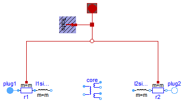

This package contains the quasi stationary space phasor connector and partial models for quasi stationary machine models.
Extends from Modelica.Icons.InterfacesPackage (Icon for packages containing interfaces).
| Name | Description |
|---|---|
| Partial model of threephase transformer |
 Modelica.Electrical.QuasiStationary.Machines.Interfaces.PartialBasicTransformer
Modelica.Electrical.QuasiStationary.Machines.Interfaces.PartialBasicTransformer
| turns ratio n | 1 | |
| nominal frequency fNominal | 50 | Hz |
| nominal voltage per phase | 100 | V RMS |
| nominal current per phase | 100 | A RMS |
| nominal apparent power | 30 | kVA |
| primary resistance R1 | 0.005 | Ohm per phase at reference temperature |
| reference temperature T1Ref | 20 | °C |
| temperature coefficient alpha20_1 | 0 | 1/K |
| primary stray inductance L1sigma | 78E-6 | H per phase |
| secondary resistance R2 | 0.005 | Ohm per phase at reference temperature |
| reference temperature T2Ref | 20 | °C |
| temperature coefficient alpha20_2 | 0 | 1/K |
| secondary stray inductance L2sigma | 78E-6 | H per phase |
| operational temperature T1Operational | 20 | °C |
| operational temperature T2Operational | 20 | °C |
| These values give the operational parameters: | ||
| nominal voltage drop | 0.05 | p.u. |
| nominal copper losses | 300 | W |
Extends from Modelica.Electrical.Machines.Icons.QuasiStationaryTransformer.
| Type | Name | Default | Description |
|---|---|---|---|
| Real | n | Ratio primary voltage (line-to-line) / secondary voltage (line-to-line) | |
| Boolean | useThermalPort | false | Enable / disable (=fixed temperatures) thermal port |
| Operational temperatures | |||
| Temperature | T1Operational | Operational temperature of primary resistance [K] | |
| Temperature | T2Operational | Operational temperature of secondary resistance [K] | |
| Nominal resistances and inductances | |||
| Resistance | R1 | Primary resistance per phase at TRef [Ohm] | |
| Temperature | T1Ref | Reference temperature of primary resistance [K] | |
| LinearTemperatureCoefficient20 | alpha20_1 | Temperature coefficient of primary resistance at 20 degC [1/K] | |
| Inductance | L1sigma | Primary stray inductance per phase [H] | |
| Resistance | R2 | Secondary resistance per phase at TRef [Ohm] | |
| Temperature | T2Ref | Reference temperature of secondary resistance [K] | |
| LinearTemperatureCoefficient20 | alpha20_2 | Temperature coefficient of secondary resistance at 20 degC [1/K] | |
| Inductance | L2sigma | Secondary stray inductance per phase [H] | |
| Type | Name | Description |
|---|---|---|
| PositivePlug | plug1 | Primary plug |
| NegativePlug | plug2 | Secondary plug |
| ThermalPortTransformer | thermalPort |
partial model PartialBasicTransformer
"Partial model of threephase transformer"
extends Modelica.Electrical.Machines.Icons.QuasiStationaryTransformer;
constant Integer m(min=1) = 3 "Number of phases";
constant String VectorGroup="Yy00";
parameter Real n(start=1)
"Ratio primary voltage (line-to-line) / secondary voltage (line-to-line)";
parameter Modelica.SIunits.Resistance R1(start=5E-3/(if C1=="D" then 1 else 3))
"Primary resistance per phase at TRef";
parameter Modelica.SIunits.Temperature T1Ref(start=293.15)
"Reference temperature of primary resistance";
parameter Modelica.Electrical.Machines.Thermal.LinearTemperatureCoefficient20
alpha20_1(start=0)
"Temperature coefficient of primary resistance at 20 degC";
parameter Modelica.SIunits.Inductance L1sigma(start=78E-6/(if C1=="D" then 1 else 3))
"Primary stray inductance per phase";
parameter Modelica.SIunits.Resistance R2(start=5E-3/(if C2=="d" then 1 else 3))
"Secondary resistance per phase at TRef";
parameter Modelica.SIunits.Temperature T2Ref(start=293.15)
"Reference temperature of secondary resistance";
parameter Modelica.Electrical.Machines.Thermal.LinearTemperatureCoefficient20
alpha20_2(start=0)
"Temperature coefficient of secondary resistance at 20 degC";
parameter Modelica.SIunits.Inductance L2sigma(start=78E-6/(if C2=="d" then 1 else 3))
"Secondary stray inductance per phase";
parameter Boolean useThermalPort=false
"Enable / disable (=fixed temperatures) thermal port";
parameter Modelica.SIunits.Temperature T1Operational(start=293.15)
"Operational temperature of primary resistance";
parameter Modelica.SIunits.Temperature T2Operational(start=293.15)
"Operational temperature of secondary resistance";
output Modelica.Electrical.Machines.Interfaces.PowerBalanceTransformer powerBalance(
final power1 = sum({Modelica.ComplexMath.real(v1[j]*Modelica.ComplexMath.conj( i1[j])) for j in 1:m}),
final power2 = sum({Modelica.ComplexMath.real(v2[j]*Modelica.ComplexMath.conj(-i2[j])) for j in 1:m}),
final lossPower1 = -sum(r1.heatPort.Q_flow),
final lossPower2 = -sum(r2.heatPort.Q_flow),
final lossPowerCore = 0) "Power balance";
output Modelica.SIunits.ComplexVoltage v1[
m]=plug1.pin.v "Primary voltage";
output Modelica.SIunits.ComplexCurrent i1[
m]=plug1.pin.i "Primary current";
output Modelica.SIunits.ComplexVoltage v2[
m]=plug2.pin.v "Secondary voltage";
output Modelica.SIunits.ComplexCurrent i2[
m]=plug2.pin.i "Secondary current";
protected
constant String C1 = Modelica.Utilities.Strings.substring(VectorGroup,1,1);
constant String C2 = Modelica.Utilities.Strings.substring(VectorGroup,2,2);
parameter Real ni=n*(if C2=="z" then sqrt(3) else 2)*(if C2=="d" then 1 else sqrt(3))/(if C1=="D" then 1 else sqrt(3));
public
QuasiStationary.MultiPhase.Interfaces.PositivePlug plug1(final m=m)
"Primary plug";
QuasiStationary.MultiPhase.Interfaces.NegativePlug plug2(final m=m)
"Secondary plug";
QuasiStationary.MultiPhase.Basic.Resistor r1(
final m=m,
final R_ref=fill(R1,m),
final T_ref=fill(T1Ref,m),
final alpha_ref=fill(Modelica.Electrical.Machines.Thermal.convertAlpha(alpha20_1, T1Ref), m),
final useHeatPort=true,
final T=fill(T1Ref,m));
QuasiStationary.MultiPhase.Basic.Inductor l1sigma(final m=m, final L=fill(L1sigma, m));
QuasiStationary.MultiPhase.Basic.Resistor r2(
final m=m,
final R_ref=fill(R2,m),
final T_ref=fill(T2Ref,m),
final alpha_ref=fill(Modelica.Electrical.Machines.Thermal.convertAlpha(alpha20_2, T2Ref), m),
final useHeatPort=true,
final T=fill(T2Ref,m));
QuasiStationary.MultiPhase.Basic.Inductor l2sigma(final m=m, final L=fill(L2sigma, m));
QuasiStationary.Machines.BasicMachines.Components.IdealCore core(
final m=m,
final n12=ni,
final n13=ni);
Modelica.Electrical.Machines.Interfaces.ThermalPortTransformer
thermalPort if
useThermalPort;
Modelica.Electrical.Machines.Thermal.ThermalAmbientTransformer
thermalAmbient(
final useTemperatureInputs=false,
final T1=T1Operational,
final T2=T2Operational) if not useThermalPort;
protected
Modelica.Electrical.Machines.Interfaces.ThermalPortTransformer
internalThermalPort;
equation
connect(r1.plug_n,l1sigma. plug_p);
connect(l2sigma.plug_n,r2. plug_p);
connect(plug1, r1.plug_p);
connect(r2.plug_n, plug2);
connect(thermalPort, internalThermalPort);
connect(thermalAmbient.thermalPort, internalThermalPort);
connect(r1.heatPort, internalThermalPort.heatPort1);
connect(r2.heatPort, internalThermalPort.heatPort2);
end PartialBasicTransformer;